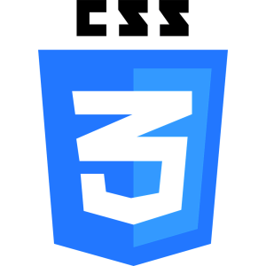
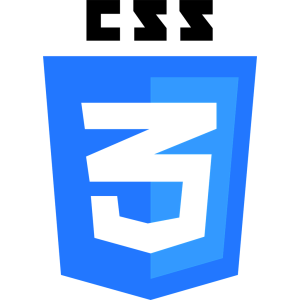
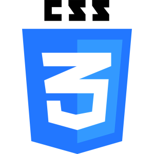

This web-app has been built with jQuery, HTML5, and CSS3. It uses technology designed by Cleverscript to handle all of the data sending, recieving, and language processing for the bot. It also uses the typed.js package to display the animated typing on the landing page.
 

